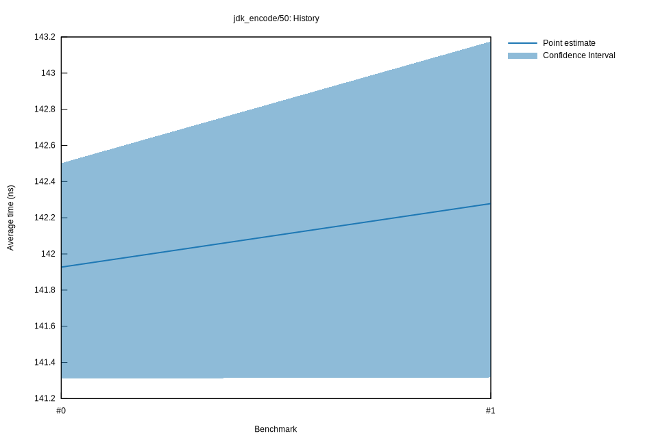

# 32022-10-16T19:55:07+03:00
|
Lower Bound |
Estimate |
Upper Bound |
| Value: |
126.33ns |
126.52ns |
126.76ns |
| Throughput: |
385.01MiB/s |
384.42MiB/s |
383.69MiB/s |
| Change in Value: |
-12.063% |
-11.628% |
-11.181% |
| Change in Throughput: |
+13.718% |
+13.158% |
+12.589% |
No change in performance detected.
# 22022-10-16T17:17:04+03:00
|
Lower Bound |
Estimate |
Upper Bound |
| Value: |
143.33ns |
143.88ns |
144.43ns |
| Throughput: |
339.35MiB/s |
338.05MiB/s |
336.75MiB/s |
| Change in Value: |
-0.5543% |
+0.1328% |
+0.8004% |
| Change in Throughput: |
+0.5573% |
-0.1326% |
-0.7941% |
Change within noise threshold.
# 12022-10-15T17:11:48+03:00
|
Lower Bound |
Estimate |
Upper Bound |
| Value: |
141.32ns |
142.28ns |
143.17ns |
| Throughput: |
344.17MiB/s |
341.85MiB/s |
339.71MiB/s |
| Change in Value: |
+0.6665% |
+1.4036% |
+2.1506% |
| Change in Throughput: |
-0.6621% |
-1.3841% |
-2.1053% |
No change in performance detected.
# 02022-10-15T16:47:26+03:00
|
Lower Bound |
Estimate |
Upper Bound |
| Value: |
141.31ns |
141.93ns |
142.50ns |
| Throughput: |
344.19MiB/s |
342.69MiB/s |
341.31MiB/s |